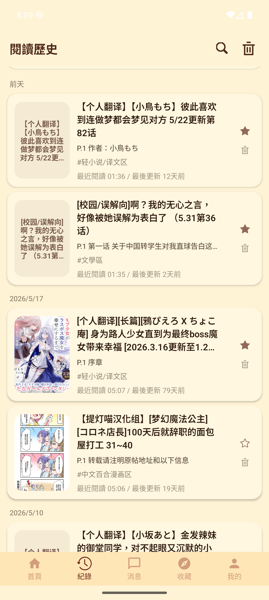
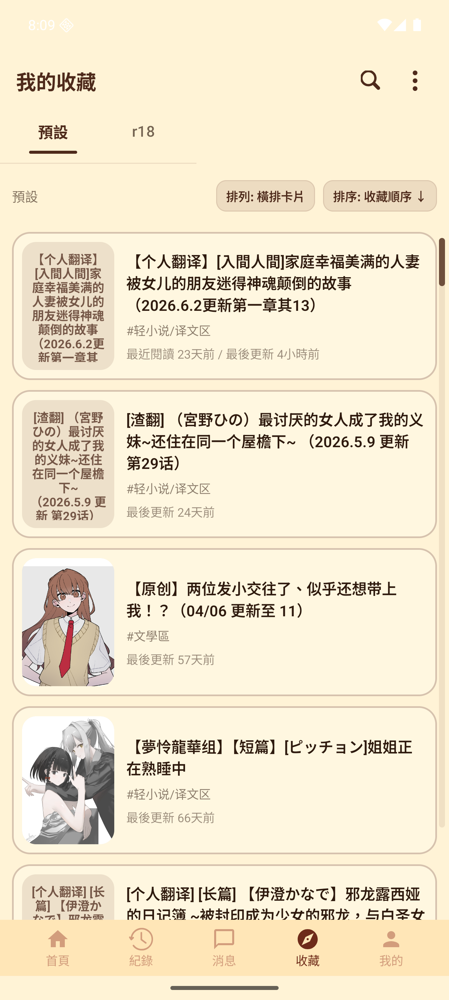
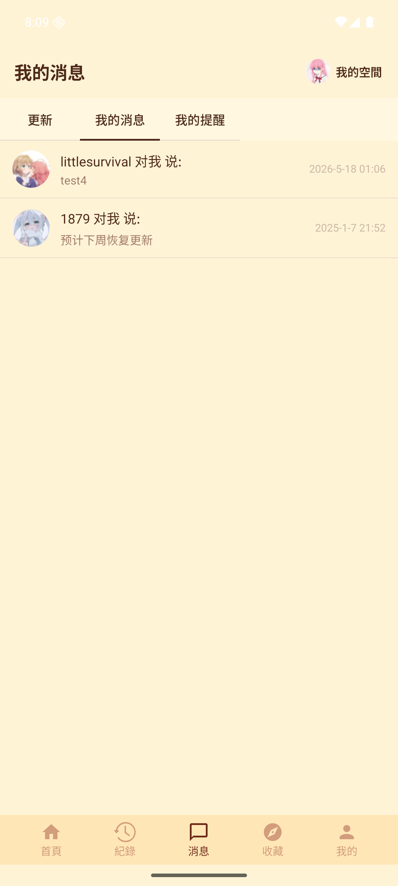
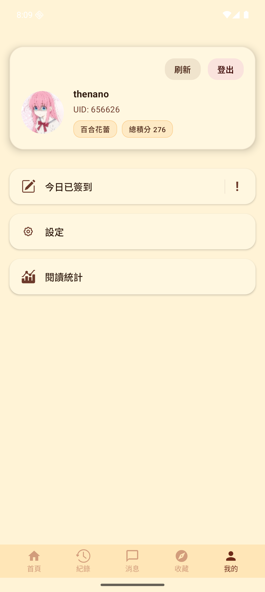

首頁 / 版面
快速進入論壇分區
首頁整理版塊分類與今日更新數。版面頁支援子版、置頂、排序、分類、搜尋、發帖與版面收藏。
Kotlin Multiplatform / Compose Multiplatform
把百合會論壇、閱讀紀錄、收藏同步、消息與每日簽到整理成更適合手機使用的 App 體驗。
Modules
每個模組都聚焦常用流程：找內容、讀內容、記住進度、管理收藏、追蹤更新。
首頁整理版塊分類與今日更新數。版面頁支援子版、置頂、排序、分類、搜尋、發帖與版面收藏。
支援帖子、小說與圖片閱讀。閱讀位置會被保存，也能從閱讀器進入標籤、回覆、評分與收藏操作。

依日期列出閱讀項目，支援搜尋、論壇篩選、分頁、批次刪除，以及快速回到最近閱讀。

可建立分類與集合，支援搜尋、排序、批次操作、遠端收藏匯入，以及同步進度與中斷恢復。

集中查看收藏更新、我的消息與我的提醒。未讀狀態會回饋到底部分頁徽章。

顯示登入狀態、每日簽到、簽到資訊、設定入口與閱讀統計。啟動時可提醒尚未簽到。
Screens
以下畫面來自 Android emulator 實拍，展示目前 App 的主要流程。
Development
專案以共用資料層搭配 Compose UI，Android 與 iOS 平台各自補上儲存、網路與系統整合。
adb devices
./gradlew.bat :composeApp:compileDebugKotlinAndroid --console=plain
./gradlew.bat :composeApp:installDebug --console=plainPowerShell 讀寫中文內容時請固定使用 UTF-8。
Comparison
此區塊先保留，待補 Yamibo 網站 mobile 模式與 App 的差異整理。